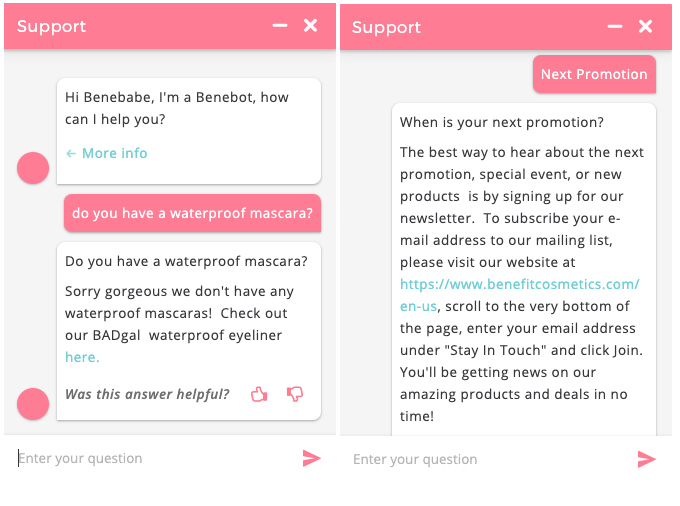
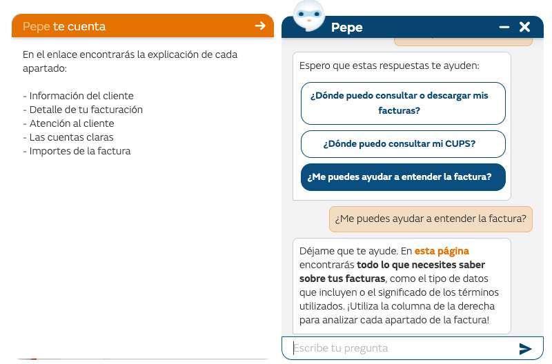

Qué es un chatbot:
Es un asistente que se comunica con los usuarios a través de mensajes de texto.
Suele ser un compañero virtual que se integra en sitios web y aplicaciones, conversando e ayudando a los usuarios.
Permite que el usuario mantenga una conversación a través de un cierto sistema programado asemejandose a un sistema de mensajería, como lo es, por ejemplo: Whatsapp o Facebook.
El sistema está programado para que interactúe con el cliente y le resuelva dudas, pero sin que haya una persona física contestando. y tiene la ventaja de estar disponible siempre para resolver las dudas de los usuarios que quieran contactar.
Árbol de problemas:

Árbol de objetivos:

Objetivo del proyecto:
El Objetivo de este proyecto es el de incentivar a la reducción del calentamiento global por la contaminación provocada por el mal uso de las energías, las cuales pueden contaminar al mundo, como tambien así observar más a profundidad la problematica ambiental actual.
Ejemplos:

Lienzo modelo de negocio